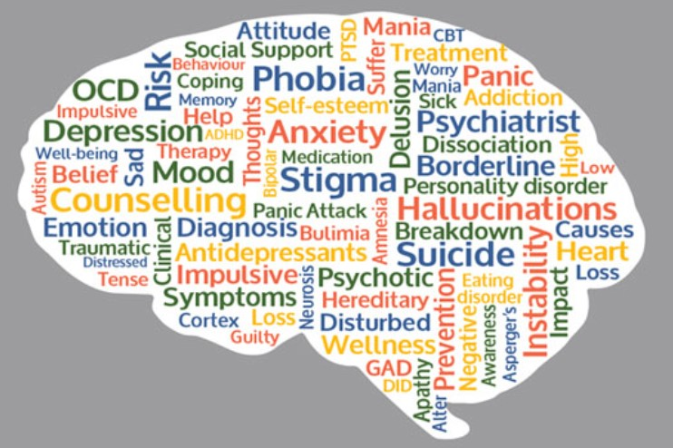
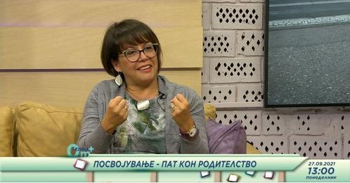
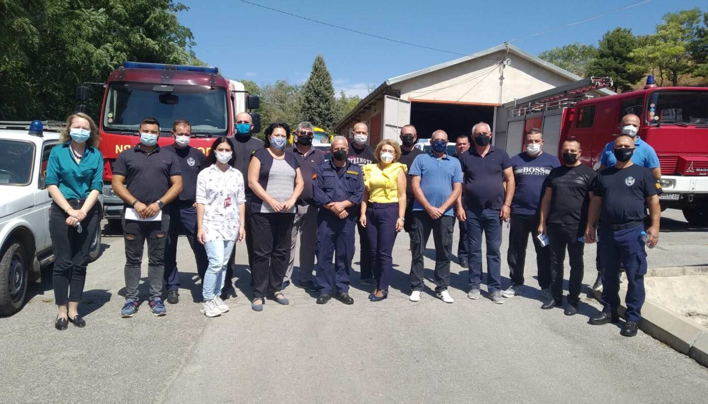

Кои зборови Ви доаѓаат кога ќе го споменам зборчето ЛУТИНА? Кои слики Ви се појавуваат? Кои сензации ги чувствувате кога гледате во лутината?
А кои зборови или слики ви доаѓаат кога ќе го споменам зборчето „НАЛУТЕНО ДЕТЕ“, или пак „АГРЕСИВНО ДЕТЕ“?
На линкот подолу прочитајте повеќе за лутината и агресивното однесување кај децата во рамки на психоедукативен текст на психологот Радмила Живановиќ, подготвен во рамки на Национална Мрежа Против Насилство врз Жените и Семејно Насилство Глас против насилство.
Лутината и агресивното однесување кај децата

„Не постои рецепт за совршено ментално здравје. Тоа е илузијата со која што најчесто се бориме. Постои можност секој да го најде начинот на кој поавтентично и поефективно би функционирал во светот како таков, со намален страв, очај и паничност. Потребно е многу повеќе да ја напуштиме таа илузија и да се вгнездиме во нашите тела, во контактот со реалноста и во релациите со другите околу нас.“
На линкот подолу прочитајте го интервјуто со психолозите Радмила Живановиќ, и Mirjana JovanovskaStojanovska за МИА за менталното здравје за време на пандемија со новинарката Кристина Ивановска.
Менталното здравје во и по пандемијата - Не можеме да ги контролираме условите во коишто живееме, но треба да ја преземеме контролата врз себе

Погледнете ја емисијата Посвојување- Пат кон родителството на Телма Амбуланта / 0m+ na ТВ Телма во прекрасното друштво на Радмила и Марија.
Наскоро, можност за присуство на работилници за Посвоително родителство...
0м+ Посвојување - Пат кон родителство

Психолозите и психотерапевти на Психотерапика: Radmila Zivanovic и Ana Blazeva како дел од волонтерската акција организирана од Комора на психолози на Р.Македонија во соработка со Црвен крст на град Скопје/City Red Cross of Skopje и општинските едници на Црвен Крст во три градови во источна Македонија Кочани, Делчево и Берово на 03.09.2021 реализираа психолошка подршка - дебрифинг за оние кои учестуваат во гаснењето на пожарите во овој дел на земјата. Заедно со нашите колешки дадовме придонес кон грижата за менталното здравје на помагачите во справување со кризна ситуација - пожарите.
Со психолошкиот дебрифинг овозможивме простор за споделување на искуствата и емоционалното доживување од настаните, неговата рефлексија врз секојдневието, потоа психоедукација за начините на справување со можните ефекти и акцент на интегрирање на искуството како дел од капацитетите за резилиентност, особено преку уважување на иксутвото како професионалци, но и како посебен влог во грижа за заедницата.
Покрај бројните впечатоци, особено се издвојува свесноста на професионалците за потребата од континуирана грижа за менталното здравје на сите што секојдневно извршуваат високо стресна работа изложени на директна и секундарна трауматизација, како што се пожарникарите, полицајците, волонтерите и др.
Комората на психолози и Црвен крст со дебрифинг сесии за грижа за менталното здравје на учесниците во гаснењето на пожарите во Кочанско